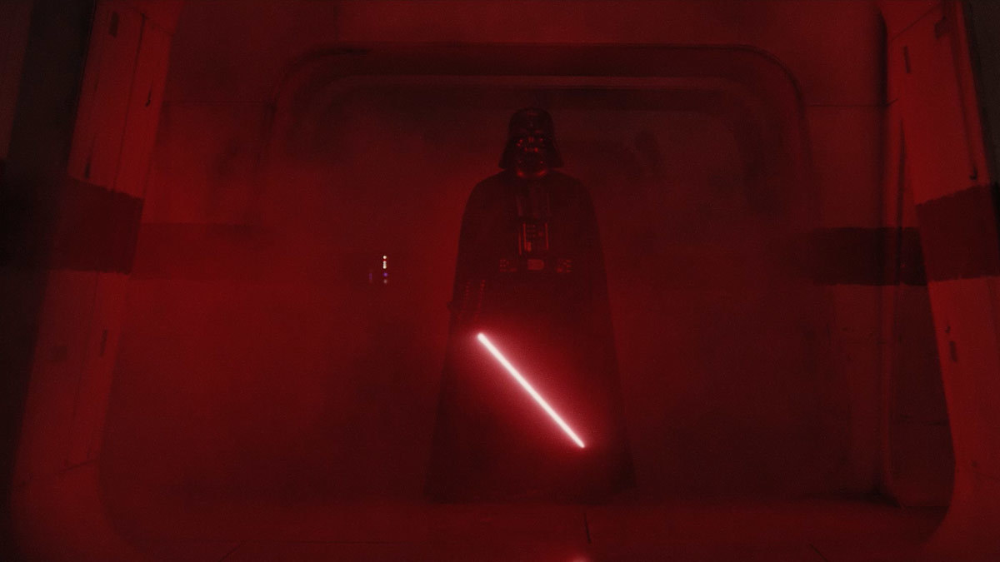

Darth Vader
The man who killed the emperor, and some others too...

When the plans for the Death Star were stolen, Vader would take action to clean up Krennic's mess, personally slaughtering a squad of rebel soldiers and leading the hunt for the data tapes.
- 41 BBY - Born to Schmi Skywalker on Tatooine
- 32 BBY - Battle of Naboo, Anakin is freed from slavery by Qui-Gon Jinn, then he destroy the capital ship of the trade federation ending the battle.
- 32 BBY - The Jedi High Consil permits Obi-Wan Kenoby to train Anakin as a Jedi.
- 22 BBY - Anakin is charged with the protection of Senator Padme Amidala. They go undercover back to Padme's homeworld of Naboo while Obi-Wan searches for the assassin. as they spend more time together, the two fall in love.
- 22 BBY - Anakin is haunted by dreams of his dying mother. believing them to be true, he returns to Tatooine. He finds her dead in a Tusken camp. In a rage, he slaughters them and swears that he will never again be powerless in the face of death.
- 22 BBY - Anakin Skywalker and Padmé Amidala are secretly wed on Naboo.
- 19 BBY - Anakin Skywalker is anointed Darth Vader, Dark Lord of the Sith.
- 19 BBY - Luke Skywalker and Leia Organa are born to Padmé Amidala on Polis Massa. Padmé Amidala dies in childbirth.
- 3 ABY - Tells Luke he is his father.
- 4 ABY - Battle of Endor. Darth Vader is redeemed and kills Darth Sidious, the Galactic Emperor, fulfilling the prophecy of the Chosen One and bringing balance to the Force, as well as destroying the Sith.
Here's a time line of Anakin Skywalker/Darth Vader:
"I see through the lies of the Jedi. I do not fear the dark side as you do. I have brought peace, freedom, justice, and security to my new empire."
-- Darth Vader